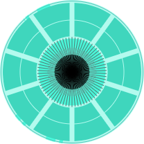

Project: The Sight
(2021)
Da Yeon Yoo
Project: The Sight is a virtual exhibition about people's sight.
People's sight sometimes could be somewhat voyeuristic or hinders other people.
Inspired by some movies of Alfred Hitchcock, artworks, and games.
I tried to combine rigorous geometric elements from programming with the aesthetic touch of visual art.
Click the icon of each project, it will link you to enjoy my p5js works.
Selective Attention(the Gaze Control)
find your old experience of it.
Visual attention is strongly influenced by the meaning of the subject rather than visual salience, including brightness or contrasts.
The meaning of the subject is based on people's value of meaning from individual knowledge and experience, which are related to their cultural and social background.
Colors changing, eye patterns, and walking persons.
You will gaze at something with your own interest in your mind.
By mingling those psychological contents of human behaviors, I would like to start this exhibition with pop-art-looking artwork.
Voyeurism

Click. Who is watching who?
Inspired by Alfred Hitchcock's motif of voyeurism and birds, particularly from Psycho (1960), The Bird (1963).
I think in the aspect of the cinema, a motif of voyeurism also implies that action of watching a screen, which begins from the peephole machine, Kinetoscope.
That also inspired to this work, so that I put animated frames to be look like early history of black and white motion picture.
Being Seen But Try Not To Look At

The eye is glimpsing a person, but as you know, it is not polite to keep staring at someone.
Gazes

Click and drag a walking person, eyes will always follow you.
"Gazes" is a part of my previous stop motion art video titled Infected, Affected, Effected, which explores the psychological phenomenon of the COVID-19 period.
In 2020, during a few days of isolation in the facility and two weeks of self-quarantine, I had experienced being controlled freedom, the fear of infection, and negative public opinion about locals from foreign countries at that time.
I extended those experiences of anxiety through the abstract atmosphere of stop motion animation using linocuts, collagraphs, and monographs,
furthermore, made a simple interactive scene using p5js.
Infected, Affected, Effected, 2020
video, linocuts, collagraphs, and monographs on paper
1:34
Rear Window
Click and watch each person living their life. Someday, they will notice you are watching them.
Rear Window, as a title, this project is created as an homage to Alfred Hitchcock's Rear Window (1954).
The project is inspired by the movie Rear Window, but I shift a bit more modernistic and reflect the COVID-19 period.
Each floor has a different story,
which the top floor of the apartment symbolizes disconnection,
the middle one is about loneliness (Miss. LonelyHearts),
and the bottom floor is about the aggression of the relationship.